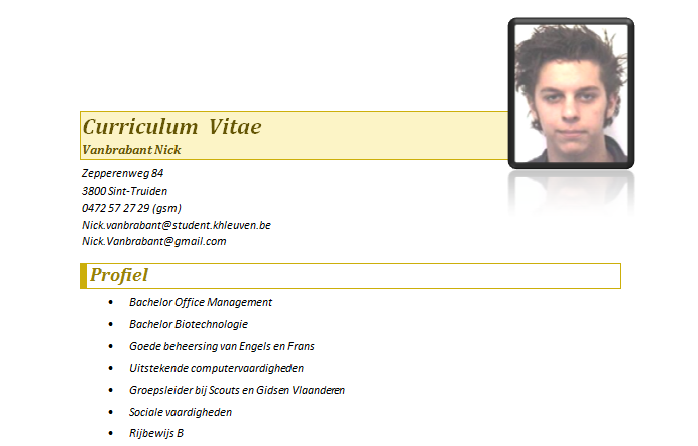
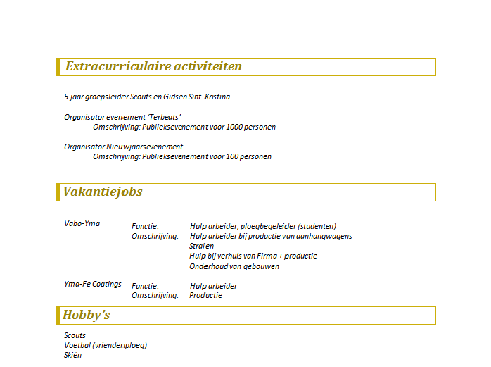

WebSonic.nl Template
De Website van Vanbrabant Nick -
-
-
Terug naar hoofdpagina
Nederlands CV
Profiel

Opleiding en kennis
Extracurriculaire activiteiten, vakantiejobs en hobby's

Referenties
Terug naar hoofdpagina